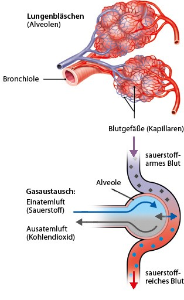

Lungen
Die Lunge ist ein lebenswichtiges Organ. Sie ermöglicht die Atmung und sorgt dafür, dass der Sauerstoff aus der Atemluft in das Blut und damit in den gesamten Körper gelangt. Die Lunge liegt gut geschützt von den Rippen im Brustkorb. Im Aufbau ähnelt die Lunge einem Baum, der auf dem Kopf steht: Von der Luftröhre gehen rechts und links zu den beiden Lungenflügeln zwei Äste ab, die Hauptbronchien. Sie verzweigen sich in der Lunge in immer dünnere Bronchien, an deren Enden dann die Lungenbläschen sitzen. Die körperliche Leistungsfähigkeit eines Menschen ist stark davon abhängig, wie die Lunge und das Herz funktionieren. Die Lungenfunktion kann mithilfe verschiedener Atemtests gemessen werden.
Was passiert bei der Atmung?
Beim Einatmen weitet sich der Brustkorb, die Lunge dehnt sich aus und es strömt Luft ein. Beim Ausatmen zieht sich die Lunge wieder zusammen und Luft entweicht. Die Atembewegungen werden durch Muskeln erzeugt, vor allem durch das Zwerchfell und die Zwischenrippenmuskeln. Die Atmung wird vom Nervensystem gesteuert, läuft aber die meiste Zeit unbewusst ab. Erwachsene atmen in Ruhe 14- bis 16-mal pro Minute. Bei jedem ruhigen Atemzug wird etwa ein halber Liter Luft eingeatmet. Bei Anstrengung wird die Atmung schneller und tiefer, damit mehr Sauerstoff ins Blut gelangt.
Wie funktioniert die Aufnahme von Sauerstoff?
Mit jedem Atemzug strömt sauerstoffhaltige Luft durch die Luftröhre und die Bronchien bis in die Lungenbläschen. Diese sogenannten Alveolen hängen traubenartig an den Bronchialzweigen. Eine gesunde Lunge enthält rund 300 Millionen Lungenbläschen. Sie alle sind von feinen Blutgefäßen (Kapillaren) umschlossen. Durch die dünne Hülle der Alveolen gelangt der Sauerstoff aus der eingeatmeten Luft in die Blutgefäße. Dieser Vorgang wird auch Diffusion genannt. Über den Blutkreislauf wird der Sauerstoff im Körper verteilt und erreicht jede Zelle. In der gleichen Zeit, in der das Blut in den Alveolen Sauerstoff aufnimmt, gibt es dort auch Kohlendioxid wieder ab. Kohlendioxid (CO₂) entsteht als Abfallprodukt des Zellstoffwechsels. Es wird mit dem Ausatmen ins Freie entsorgt. Weil also nicht nur Sauerstoff aufgenommen, sondern auch Kohlendioxid abgegeben wird, spricht man auch von Gasaustausch in der Lunge.
Wie sind die unteren Atemwege aufgebaut?
Die unteren Atemwege bestehen aus der Luftröhre und den Bronchien. Die Luftröhre ist bei Erwachsenen gut zehn Zentimeter lang und teilt sich an ihrem Ende in die beiden Hauptbronchien. Einer führt in den rechten, der andere in den linken Lungenflügel. Im Lungengewebe verzweigen sie sich in immer feinere Röhrchen, die Bronchien. Die Luftröhre und die Bronchien sind mit einer Schleimhaut sowie Millionen von winzigen Flimmerhärchen ausgekleidet. Schleim und Härchen sorgen dafür, dass Krankheitserreger und eingeatmete Schadstoffe wie Staub sich nicht in der Lunge festsetzen: Der Schleim bindet die eingedrungenen Partikel. Durch die Bewegung der Flimmerhärchen wird er wie auf einem Fließband in Richtung Rachen geschoben – und dort verschluckt oder abgehustet. Erreger und Schadstoffe werden so unschädlich gemacht. Wenn größere Fremdkörper in die Luftröhre gelangen, reagieren die Atemwege mit einem reflexartigen Hustenreiz.
Wikipedia lesen